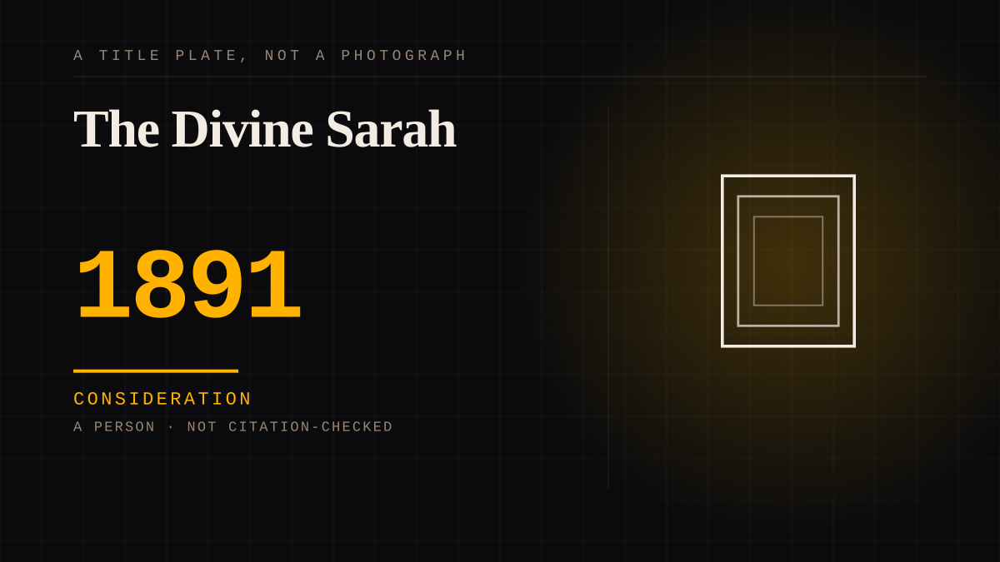

A person · 1891 · Theatre
The Divine Sarah
Sarah Bernhardt toured more like a head of state than a player: when she sailed for New York in 1891 the crossing was covered the way a royal visit is, and 'Divine Sarah' was by then the whole public's phrase for her. Mark Twain's note put it exactly - there were five kinds of actresses, and Sarah Bernhardt. An idol built at distance.

The most famous face the pre-cinema stage could make. Born in Paris in 1844, Bernhardt was by the 1870s the figure the international press called Divine Sarah - Oscar Wilde's 1879 poem of that name had her crowned with lilies at the feet of audiences who would never see her act in a room, and a French paper called her a national institution. Her motto was 'Quand Même' - 'in spite of everything' - which the torments of a career turned into a legend of refusal.
The 1891 tour was the idol arriving.
In 1891 she left Le Havre on 15 October aboard the L'Amérique on her way to America, and the arrival was covered in the register of a state visit: one account of these tours records the homage shown her as the kind 'usually reserved for royalty', applause and press for a woman most of the auditorium had only met through prints, reviews and playbills. Distance is the mechanism - the audience knew the surface better than the woman, and a finished public surface is exactly what a parasocial idol is made of.
She stood at the seam between the printed and the cinematic star.
Mark Twain's tribute, written for a tour programme, ranked her apart from every other class of actress, and the cinema that arrived within a generation inherited the structure: the same manufactured distance, the same schedule of manufactured encounters, the same audience that never arrived in time for the making. The counter-argument - that she was simply the greatest actress of her age and the devotion was earned on stage - is kept on the entry. The claim here is narrower: her fame was distributed by the print machinery this corpus files everywhere else under the idol, which makes her the theatre's first systematic case of it.
Consideration. The part where somebody stops and thinks. The research, the diagnosis, the ethics, the lawsuits, the regulators. Roughly fifty years of arguing with itself about whether this is a relationship.
Where it sits
1800 1800-1899 · 1891 1899
Provenance · 1 source record(s)
- unverifiedThe American tours and their register as the article records it: the 1891 departure from Le Havre aboard the L'Amérique, homage usually reserved for royalty, and Mark Twain's programme tribute ranking her apart from every class of actress. Read through a search index rather than fetched, so the record is unverified: a reader can open this page, this agent did not.American Heritage, "Bernhardt in America" ↗
Connected · 2 out, 0 in
It sits in
The full timeline → · The database → · See it in the atlas →